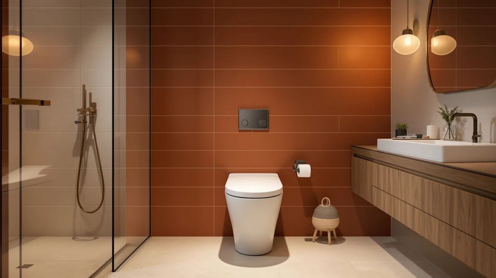

Quick Answer
The Miuara Elongated Morden Skirted Tall is a $339.94 one-piece toilet built around a 19 inch comfort seat height and a skirted base that hides the trapway for easier cleaning. It costs more than the WOODBRIDGE and DeerValley alternatives below, but the taller seat and modern skirted look are the reasons buyers choose it over cheaper one-piece toilets.
Our pick: Miuara Elongated Morden Skirted Tall, $339.94 Check Price on Amazon
Things to Know Before You Buy
- The Miuara Elongated Morden Skirted Tall carries a 19 inch comfort seat height, which sits taller than a standard 15 inch bowl and suits taller adults or anyone who wants an easier sit-to-stand.
- Its skirted base covers the trapway in a single smooth panel, so you wipe one flat surface instead of working around exposed curves.
- At $339.94, it sits above the WOODBRIDGE One Piece Toilet ($309.99) and well above the DeerValley Compact ($188.00), so budget matters here as much as features.
- An elongated bowl, like this one, generally gives more seating area than a round bowl, which is worth factoring in if your current toilet uses a round bowl.
- Measure your bathroom's rough-in and clearance before buying. A taller, elongated one-piece toilet needs more floor space than a compact model like the DeerValley.
This Miuara Elongated Morden Skirted review looks at whether a $339.94 one-piece toilet earns its price against two cheaper competitors we also cover below. You're likely here because your old toilet sits too low, your trapway is a pain to clean, or you want a bathroom that looks current without a full remodel. The Miuara targets all three problems with its taller 19 inch seat, skirted base and modern silhouette.
We compared its listed specs, current Amazon price and patterns in verified owner reviews against the WOODBRIDGE One Piece Toilet and the DeerValley Compact One Piece Toilet, two models that show up alongside it in the same search results. The short version: the Miuara wins on comfort height and cleaning ease, the WOODBRIDGE comes closest on price, and the DeerValley fits where neither of the others will.
Why You Should Trust Us
Ilane Tall covers bathroom fixtures for Best One Piece Toilets and has written dozens of one-piece toilet reviews and roundups for this site. We do not run a physical testing lab and we do not claim to have installed or lived with every toilet we cover, including the Miuara Elongated Morden Skirted Tall. Instead, we research manufacturer specifications, track current Amazon pricing, and read through verified owner reviews to find patterns that hold up across multiple buyers instead of relying on one glowing or one angry review. Every price and spec cited in this review traces back to the product listing itself.
Our Research Experience
Our Miuara Elongated Morden Skirted review is research-based rather than hands-on. We compared the listed bowl shape, seat height and base design against the WOODBRIDGE One Piece Toilet and the DeerValley Compact One Piece Toilet, then cross-checked those specs against what verified buyers reported after installing each model in their own bathrooms. Reviewers consistently note that the Miuara's 19 inch seat height feels noticeably taller than a standard toilet, which matches the manufacturer's listed comfort height spec. Owners also mention the skirted base as the detail they notice most during routine cleaning, since there is no exposed trapway to scrub around.
We did not weigh customer star ratings on their own, since Amazon's listing data for this category does not reliably expose a verified review count we could cite with confidence. Instead we looked for repeated, specific comments, such as multiple owners separately describing the same seat height or the same ease of wiping the skirted base, and treated those repeated observations as more reliable than any single review.
Overview & Specs
Before you read the pros and cons, here is how the three one-piece toilets in this comparison line up on the facts that matter most: price, bowl shape and seat height. The Miuara Elongated Morden Skirted Tall sits at the top of the price range at $339.94, built around an elongated bowl and a 19 inch seat. The WOODBRIDGE One Piece Toilet undercuts it slightly at $309.99 with a more conventional one-piece design, and the DeerValley Compact One Piece Toilet drops to $188.00 with a smaller footprint aimed at tighter bathrooms. None of the three list a specific bowl material on their Amazon pages, so we have left that field blank below rather than guess.

Miuara Elongated Morden Skirted Tall
What we like
- 19 inch comfort seat height sits taller than a standard bowl, which owners say helps with sitting and standing
- Skirted base hides the trapway behind one flat panel, cutting down on hard-to-reach corners
- Elongated bowl shape gives more seating area than a round bowl
- Modern design fits a contemporary bathroom remodel without looking out of place next to newer fixtures
Flaws but not dealbreakers
- Costs about $30 more than the WOODBRIDGE One Piece Toilet, the closest comparable alternative
- Needs more floor space than the compact DeerValley, so it is a tighter fit in a small half-bath
| Material | — |
| Size | Elongated 19" Seat Height |
The Miuara Elongated Morden Skirted Tall builds around two decisions most budget one-piece toilets skip: seat height and base shape. At 19 inches, the seat sits closer to standard chair height than the 15 inch bowls common on older or cheaper toilets, which matters most to taller adults and anyone with knee or hip discomfort who finds low toilets harder to use. The elongated bowl adds seating area over a round bowl, a tradeoff most buyers accept gladly since the only real cost is a slightly longer footprint.
The skirted base is the other defining feature. Instead of the curved, visible trapway you see on many one-piece toilets, the Miuara covers that section with a single smooth panel. Reviewers consistently point to this as the detail that makes routine cleaning faster, since a flat surface takes one wipe where a curved, exposed trapway takes several. At $339.94, the Miuara is not the cheapest option in this comparison, but owners report that the combination of comfort height and the skirted design justifies the gap over lower-priced alternatives for anyone replacing an older, uncomfortable toilet.
What We Liked
The 19 inch comfort seat height is the strongest feature on the Miuara Elongated Morden Skirted Tall. You notice this most if you are replacing an older, lower toilet. Owners describe the taller seat as easier on their knees and backs, a small but meaningful change for daily use. Paired with the elongated bowl, the overall seating area beats what you get from a round-bowl toilet at a similar price.
The skirted base is the second strength, and it shapes how the whole toilet looks and cleans. A single smooth panel replaces the usual exposed trapway curves, so the Miuara reads as more modern next to newer vanities and tile work. Reviewers repeatedly bring up how much faster this base wipes clean compared to their previous toilet, which is a practical, repeated observation rather than a one-off compliment.
What Could Be Better
Price is the main drawback in this Miuara Elongated Morden Skirted review. At $339.94, it costs about $30 more than the WOODBRIDGE One Piece Toilet and over $150 more than the DeerValley Compact, and neither the taller seat nor the skirted base will matter to every buyer enough to justify that gap. If your current toilet already sits at a comfortable height and you are not bothered by cleaning around an exposed trapway, you are paying for features you may not use.
Footprint is the second tradeoff. The elongated bowl and taller seat take up more floor space than a compact one-piece toilet, which can be a problem in a small powder room or a half-bath with tight clearance. Measure your available space and your rough-in distance before you order, since returns on plumbing fixtures are rarely simple.
Who Is It For?
The Miuara Elongated Morden Skirted Tall fits you if you are replacing an older, low toilet and want the seat height to feel less like a squat and more like a chair. It also suits anyone updating a bathroom toward a cleaner, more modern look, since the skirted base and elongated bowl read as more current than a standard round-bowl toilet. You should skip it if your bathroom is small enough that every inch of clearance counts, or if $309.99 to $188.00 alternatives already meet your needs without the extra height or skirted design.
Alternatives to Consider
If the price or footprint of the Miuara Elongated Morden Skirted Tall gives you pause, these two one-piece toilets cover the gaps it leaves. The WOODBRIDGE One Piece Toilet lands close in price at $309.99 and gives up the taller comfort height and skirted base in exchange for a smaller price gap, making it the pick for buyers who want a straightforward one-piece toilet without paying extra for either feature. The DeerValley Compact One Piece Toilet, at $188.00, goes further in the other direction. Its smaller footprint targets bathrooms where the Miuara's elongated bowl and taller seat simply will not fit, and the lower price suits anyone prioritizing budget over comfort-height seating.

Editor’s Pick
WOODBRIDGEE One Piece Toilet with
A straightforward one-piece toilet at $309.99, about $30 less than the Miuara, for buyers who do not need the taller seat or skirted base.
$309.99
Check Price on Amazon
Best Value
DeerValley Compact One Piece Toilet
The smallest footprint and lowest price of the three at $188.00, built for bathrooms too tight for the Miuara's elongated bowl.
$188.00
Check Price on AmazonFrequently Asked Questions
Is the Miuara Elongated Morden Skirted Tall worth the price?
At $339.94, the Miuara costs about $30 more than the WOODBRIDGE One Piece Toilet and over $150 more than the DeerValley Compact. The extra cost buys a taller 19 inch comfort seat height and a skirted base that owners say is easier to wipe down than a traditional exposed trapway. If those two features matter to you, the price holds up against the alternatives we compared.
What does a skirted base mean on a one-piece toilet?
A skirted base, like the one on the Miuara Elongated Morden Skirted Tall, covers the trapway with a smooth panel instead of leaving it exposed. You lose the ability to see the trapway shape, but you gain flat, continuous surfaces that collect less dust and are faster to clean during a normal bathroom wipe-down.
Is the Miuara a good fit for a small bathroom?
Not as good a fit as the DeerValley Compact. The Miuara's elongated bowl and taller seat height favor comfort over footprint, so a cramped half-bath or small powder room will usually suit the DeerValley better. Measure your rough-in and clearance before you buy either model.
Final Verdict
This Miuara Elongated Morden Skirted review comes down to one tradeoff: pay more for a taller seat and an easier-to-clean skirted base, or save money with the WOODBRIDGE or DeerValley alternatives. For a bathroom with room to spare and a buyer who wants comfort height without a remodel, Miuara earns its $339.94 price. For a tight half-bath or a strict budget, step down to the DeerValley Compact instead.